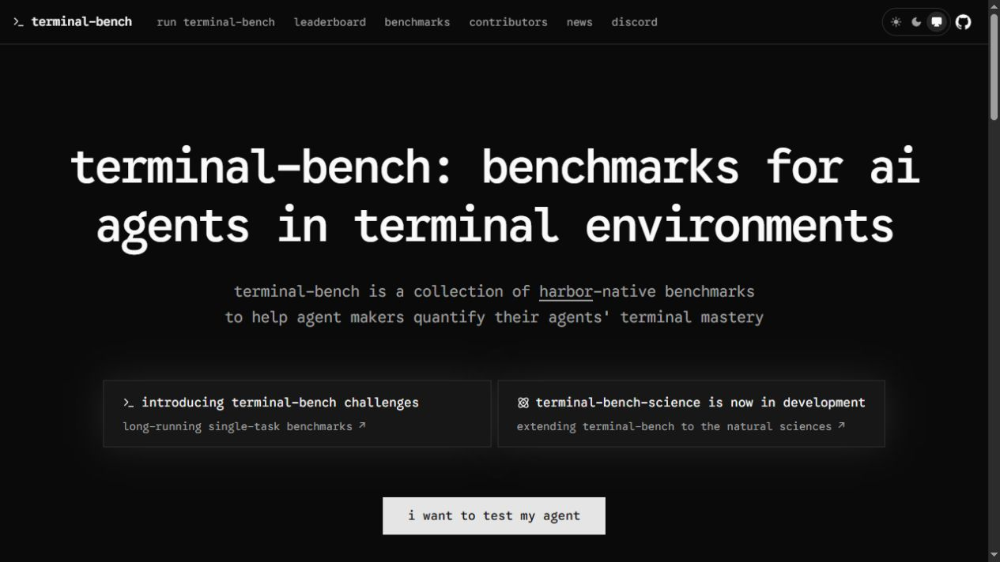
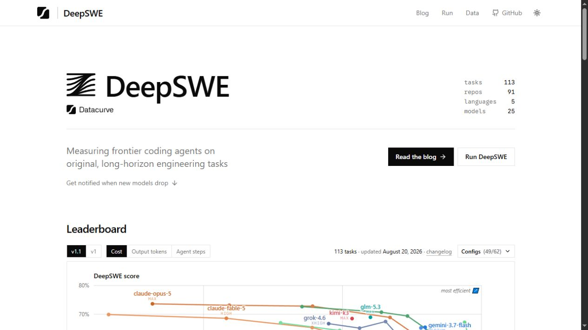
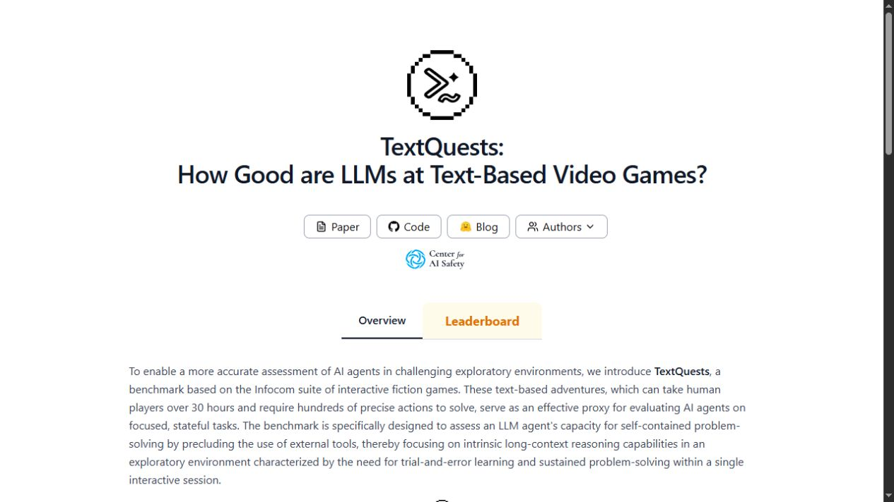
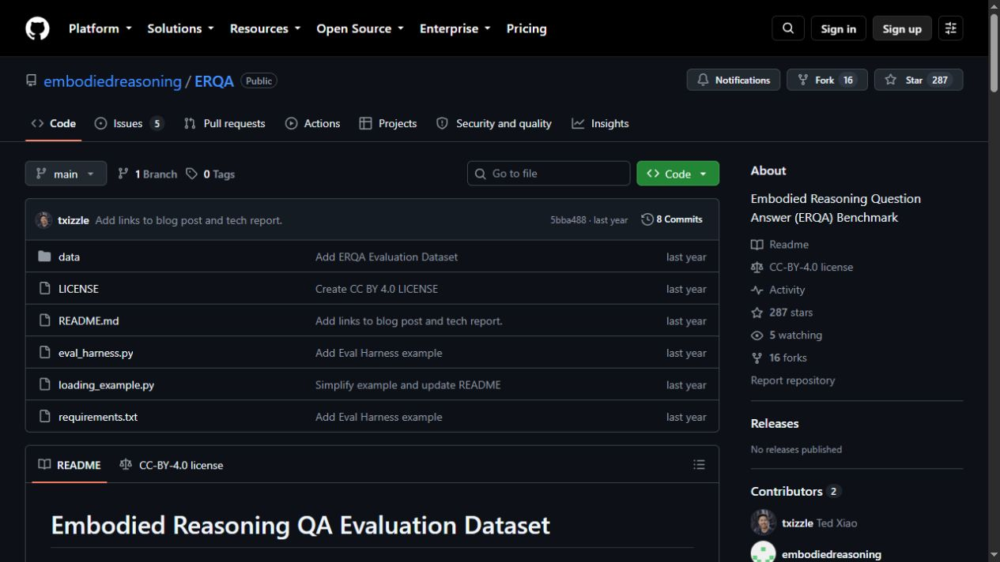
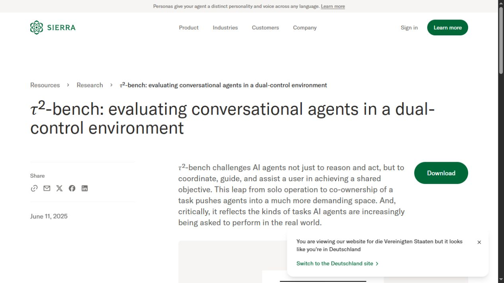
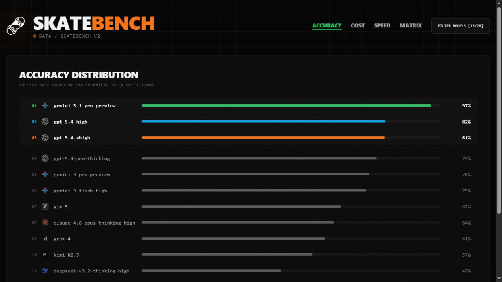

Source-provenance audit · 25 August 2026
Official did not mean first-party consistently
A complete one-shot production inventory found six first-party benchmark sources displayed as Community. The cause was missing dedicated project domains, an unreviewed-repository problem on GitHub, and drift between the browser preview and server classifier.
Classification rule
Official source now means a reviewed first-party/original publisher: an academic or lab host, the benchmark's own project site, or an exact author-owned repository. It does not mean that SupraBench endorses the benchmark's quality. Community ratings, difficulty, saturation, and upvotes remain independent.
GitHub is handled by exact repository prefixes rather than a blanket github.com allowlist. A similarly named or unrelated repository remains Community.
Complete production audit
| Benchmark | Before | After | Reason |
|---|---|---|---|
| ARC-AGI-3 | Official | Official | ARC Prize project |
| APEX-Agents-AA | Official | Official | Artificial Analysis publisher |
| Humanity's Last Exam | Official | Official | CAIS project |
| SciCode | Official | Official | Project GitHub Pages |
| Terminal-Bench Hard | Community | Official | Terminal-Bench first-party project domain |
| SWE-Bench Pro | Official | Official | Scale publisher |
| DeepSWE | Community | Official | Datacurve first-party leaderboard |
| SpatialViz | Official | Official | Original paper |
| EnigmaEval | Official | Official | Scale publisher |
| ARC-AGI-2 | Official | Official | ARC Prize project |
| TextQuests | Community | Official | First-party project and leaderboard |
| IntPhys 2 | Official | Official | Meta research publication |
| ERQA | Community | Official | Exact author-owned public repository |
| MMMU-Pro | Official | Official | Project GitHub Pages |
| SWE-bench Verified | Official | Official | SWE-bench project |
| MindCube | Official | Official | Original paper |
| Terminal-Bench v2.1 (AA Terminus 2) | Official | Official | Artificial Analysis protocol publisher |
| AA Long Context Reasoning | Official | Official | Artificial Analysis publisher |
| Tau2-Bench Telecom | Community | Official | Sierra first-party research page |
| SkateBench | Community | Official | Own project leaderboard; quality remains independently near zero |
Can community consensus override the defaults?
Yes. Benchmark ability weight is multiplied linearly by u/U*. At audit time every visible benchmark had one net upvote, so there was no actual majority signal. If a new benchmark receives 10 net upvotes while an older benchmark remains at 1, the new benchmark keeps its full intrinsic weight and the older benchmark receives a 1/10 trust factor. Ten consistent quality raters also dominate the three-neutral-rating Bayesian prior used by the family ranking.
Coverage is not negative evidence. Fewer model comparisons only make the family result provisional and more strongly regularized until the graph contains more evidence.
| New consensus | New all-5 benchmark weight | Current one-vote ARC-AGI-3 weight | Weight ratio |
|---|---|---|---|
| 1 rater / 1 upvote | 43.75 | 42.97 | 1.02× |
| 2 raters / 2 upvotes | 53.20 | 21.48 | 2.48× |
| 5 raters / 5 upvotes | 69.06 | 8.59 | 8.04× |
| 10 raters / 10 upvotes | 80.30 | 4.30 | 18.69× |
Visible first-party evidence






Publication status
Backend verified, Pages publication pending: screenshot control and six source captures passed; the manifest validates; 139 tests and tier consistency pass; the curation dry-run is intentionally empty because the boolean repairs are derived from the reviewed source-classifier migration. Production deployed successfully and the idempotent migration reported exactly 6 promotions, 0 demotions, and all 20 benchmarks scanned. Convex and D1 both contain 563 scores with drift 0. Public report and badge checks follow after the fast-forward deployment.